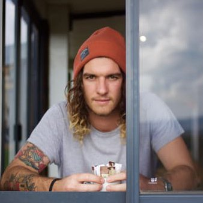
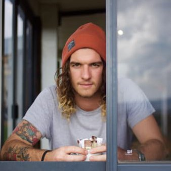

Beach Glitz-dən Urban Ritz-dən Mayami Hotels Shine
Feb 12, 2017
 

Mayami'nin otel sahəsindəki iqlimi təsvir edən eyni sözlə təsvir edilə bilər: isti daha isti. Bütün Sihirli Şəhərin hər yerində, mütləq kölgəli saatlik moteldən, məşhurlardan və biznes moğollarını hər yerdən cəlb edən dünya səviyyəli, beşulduzlu kurortlara qədər olan yerləri tapa bilərsiniz. Sunny Isles dən Coconut Grove, Miami hər zövq və büdcə üçün otel var. Bəzi yerlər
Bostonun ən yaxşı alış-veriş ləkələrindən alınan çantalarınızı doldurun
Feb 07, 2017


Bostonda alış-veriş öz mükəmməl ekskursiya yaratma şansını təmin edir. Bostonun alış-veriş sahəsinə şəxsiyyət əlavə edən kiçik dükanları təklif etmə və araşdırmağı lazım olan mənzərədən zövq alın. Çantalarınızı ən çox mağaza mərkəzlərində tapa biləcəyiniz və ya butiklər və ixtisaslaşmış mağazalarda quirky, unikal ədədləri seçən məşhur boks mağazalarında ştapel əşyaları ilə doldurur. Chanel kimi couture xətləri satmaq,
NYC-də bu romantik tədbirlər zamanı yenidən sevgiyə bürünmək
Feb 02, 2017
Məhəbbətdə kimsə romantik bir hərəkətə yalnız bir şey edə bilər, amma bəzən yaxşı bir zəmanət mükəmməl üçüncü tərəf kimi davranır və romantikliyi növbəti səviyyəyə aparır. Bəziləri üçün, dərin söhbətə intiqal almaq ürəkdən pitter patter etmək üçün ən yaxşı yoldur. Bu vəziyyətdə Mərkəzi Park (qar və ya günəş) vasitəsilə gediş məhəbbət doktorunun əmri ola bilər.
Bu yaz Vankuver parkları açıq filmlər çəkir
Jan 28, 2017


Parkdakı açıq filmlər Vankuverdəki yay ənənəsinə çevrilir və hər il daha çox film çəkilişi çəkir. Bu pulsuz hadisə, uzun bir gündən sonra küləyin və Vankuverin əla parklarından birində istirahət etmənin gözəl bir yoludur. Bir ədyal və qazon kafedrası, bəzi qəlyanaltılar, ikramlar və isti saxlamaq üçün bir şey gətirin və açıq çırtma üçün hazırsınız.
Hotel Not Hotel: Amsterdam Qərbdə unikal qalmaq
Jan 26, 2017


Hotel Not Otel bir oteldir? Və ya Amsterdamın ən yeni restoranı və bar isti ləkələrindən biri mi? Sən qərar ver! Hotel Not Hotel, Amsterdam Batıda, xüsusilə qarşıdakı qonşuluq De Baarsjes-də yerləşir. Bəlkə Amsterdamda bir otel axtarır olduğunuzda düşünəcəyiniz ilk yer deyil. Lakin Amsterdamdakı Hotel Not Hotel-də qalmaq, həqiqətən, yerli olduğunuza əmin olacaq
Greenville Zoo Debat gecəsində körpə zürafəsini ağırlayır
Jan 25, 2017


Greenville sakinləri və zoo sevən qonaqlar yekun prezidentlik müzakirəsi ərəfəsində atəşkəs idi, lakin onlar müzakirə etdikləri siyasət deyildi. Payız adlı bir ana zürafə, canlı web kamerası vasitəsilə doğum etmək haqqında idi və hər kəs izləyir. Tartışmaların son yarım saat ərzində tweets və facebook mesajları intensivliyi ilə seçilmiş və körpə heyvanların çoxu tərəfindən böyük ölçüdə - doğuldu
Goat Hill Pizza-də sourdough alın
Jan 23, 2017


Yalnız Boudin və ya bişmiş çörək bişirən çörək bişirmə bişmiş çörəkdən necə istifadə etdiyini bilirdinizmi? San Francisco Keçi Tepesi Pizza 1975-ci ildən orijinal Portreo Tepesi mövqeyində qatı qabıq üçün sourdough istifadə edir. Populyar tələbat sayəsində, West Portal-a sevincini yepyeni bir yerə yayır.
Murrayfield Stadionu: Daha bir idman meydançası
Jan 19, 2017


Murrayfield əsasən idman meydançasıdır. Bu, Şotlandiya Rugby Birliyinin (SRU) evidir və Şotlandiya ev testi matçları üçün əsas yerdir. Murrayfield də Edinburgh Sevens, Şotlandiya Hidro Elektrik Kuboku final, Pro12 və Heineken matçlarını keçirir.
TenOverSix İndi Dallasda açın
Jan 19, 2017

Bu sərin yeni butik kiçik müstəqil dizaynerlər tərəfindən hazırlanmış geyim və ev əşyaları üzərində ixtisaslaşır. Həm də təsadüfi barbekülərdən kokteyl partiyalarına qədər, bütün hallarda mükəmməl bir unikal zinət əşyaları, ayaqqabı və aksessuarlar var. Bu isti yeni butik 2013-cü ilin may ayında qapılarını açdı və Dallas alış-veriş sahəsindəki bir təmiz hava nəfəsidir.
Fənər turları Phoenix nin çöl botanika bağında çatın
Jan 17, 2017


Bu yaz, Phoenix'e gələn qonaqlar, bahçenin məşhur flashlight turlarının geri qaytarılması ilə gecə çöl botanika bağını kəşf edə bilərlər. Bu öz-özünə gedən gecə turları gecə çöl görmək, eşitmək və hiss etmək üçün nəzərdə tutulmuşdur. Bahçenin əsas izi boyunca on kəşf istasyonları çöl gecə həyatının müxtəlifliyini ortaya çıxarmaq üçün qurulmuşdur. Uşaqlar və ailələr gizli öyrənməkdən zövq alacaqlar
Bard Klassik Qəhvə və Müalicə ilə təmin edir
Jan 16, 2017

Barddakı atmosfer səmimi, rahat və dəvətlidir. Baristalar istəkləri ilə qəhvə içkisi və fincanlarını fərdiləşdirmək və səy göstərmək istəyənlərdir. Pulsuz Wi-Fi təklifi rəssam və digər mobil cihazlar üzərində işlər aparmaq üçün sakit atmosfer istəyən digərləri ilə məşhurdur. Bu cütlər və qruplar üçün də böyük bir görüş yeridür - bir neçə ilk dəfə müntəzəm olaraq keçirilir
Wildling İncəsənət Muzeyi Solvangda yenidən açılır
Jan 12, 2017

The Wildling Muzeyi 24 Avqustda Solvang'daki yeni, daha böyük yerlərini ziyarət etmək üçün camaatı dəvət edərək böyük reallaşdırdı. "İncəsənət və təbiətin olduğu yer" mövzusuna həsr olunmuş bir təşkilat, Wildling Muzeyinin missiyası təbiətin və təbiətin qorunub saxlanılması istiqamətindəki artımın artırılması üçün ziyarətçiləri təşviq etmək və ilhamlandırmaqdır